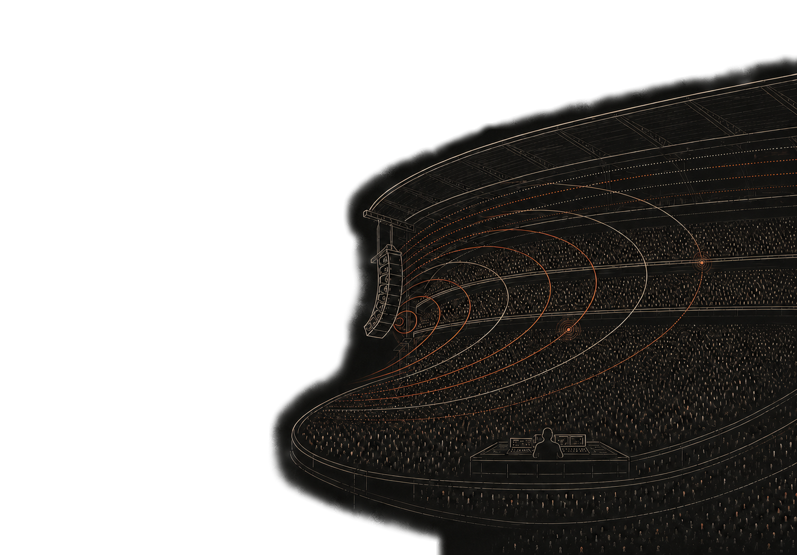
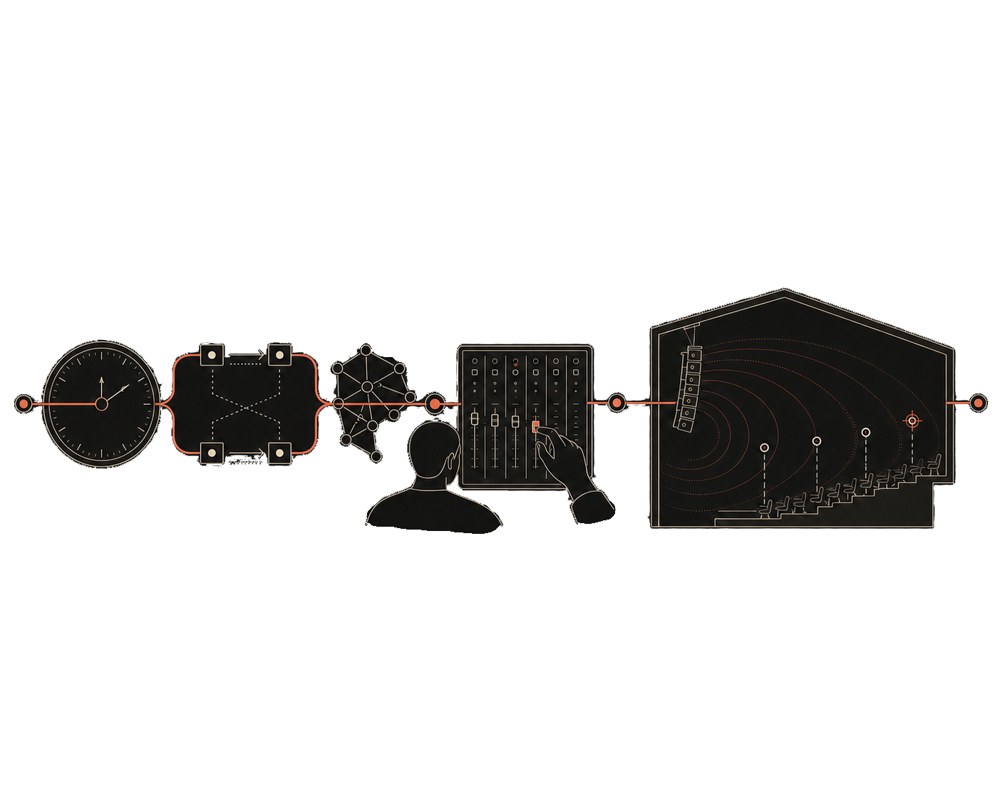
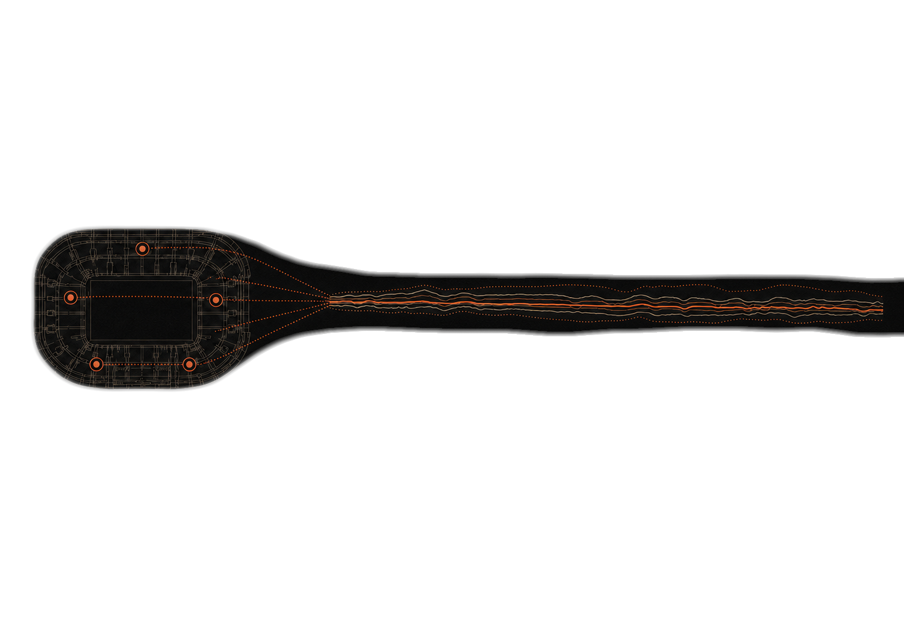

Signal
We design clocking, redundancy,
and networked audio transport.

From clock to room, every layer is designed to hold together.

We design clocking, redundancy,
and networked audio transport.
We shape live sound,
with clarity and intent.
We model, measure,
and tune for the room.
From theatres made to endure to live productions built for one night, we bring architecture, people, and delivery together—resilient signal and network foundations, trusted mixing, complete sound systems, and work shaped entirely to the brief.

Coherence
Resilience
Translation